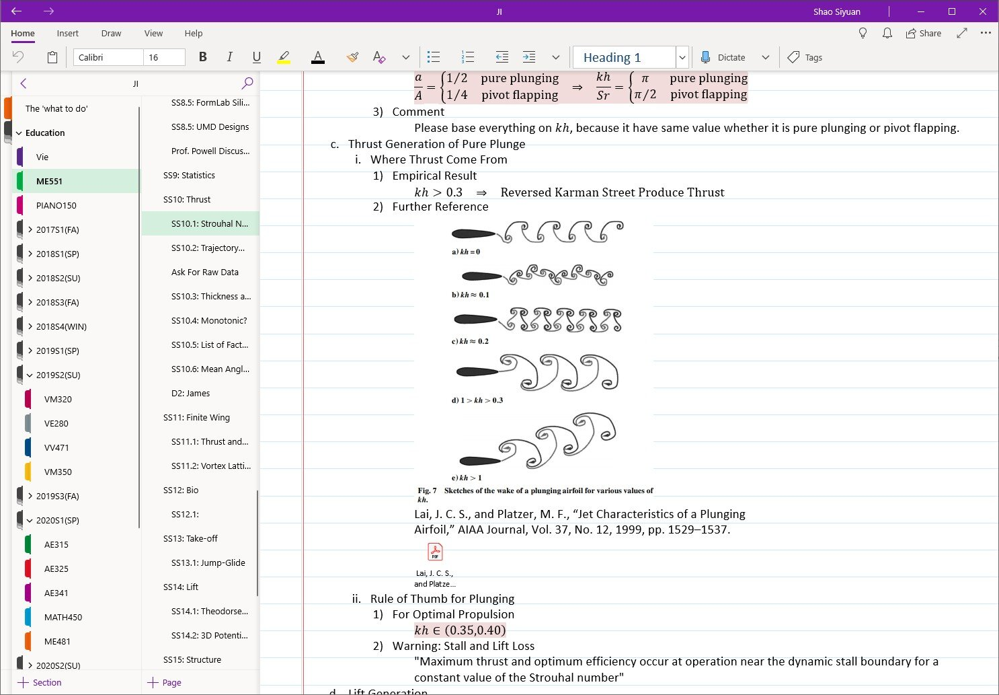

Flapping Wing Aerodynamics

Ornithopter must produce enough thrust. Otherwise, it is just a glider that is actively fluttering its wing. Thus, before going into the mechanical side, the first priority is to understand the aerodynamic characteristic of flapping wing. Fortunately, last twenty years witnessed huge development in this field.
Plunge Motion
Aerodynamicists verified von Kármán’s prediction: reversed Kármán street produced thrust (Platzer, Max F, et al). Furthermore, by observing behavior of natural flyer and wave behind plunging airfoil, it was widely agreed on that jet-characteristic starts when Strouhal number exceed 0.2 and reaches optimal efficiency around 0.3 (Platzer, Max F, et al; Taylor, G. K, et al). This rule will determine the frequency of plunge motion.
Pitch Motion
Natural flyers have distributed actuators and perform extremly complicated wing motion, combining plung, heave, pitch and twist (Tobalske, Bret W). Nature’s “designs” are inherently different from mechanical designs (Vogel, Steven). Not all the complicity of bird is necessary for an ornithopter. Many reseachers studied leading edge vortex with water tunnel or viscous code, concluding that pitch-plunge combo is most critical in increasing thrust and preventing stall (Ashraf, M.A, et al). Thus, I will include pitch into wing kinematic.
Lift and Pitch Moment
Researchers at Bath ran water tunnel and measured flapping wing lift and pitch moment (Chiereghin, N, et al). Their experimental result verified that, at given body angle of attack, flapping wing always generate larger lift than fixed wing. This means, as long as my ornithopter can produce enough lift as a fixed wing glider, it will have enough lift as a flapping wing ornithopter. Their study also verified the fidality of unsteady-vortice-lattice-method in predicting lift and pitch moment, which I will use in the future for dynamic stability analysis for ornithopter (Drela, Mark; Vest, et al).
Rigid, Morphing and Flexible Wing
By “rigid”, I mean high stiffness. It move by pivoted motion. By “morphing”, I mean deforming actively and then keeping its shape unchanged under loading. By “flexible”, I mean deforming passively under loading.
I really had a hard time making decision which one to use. Existed ornithopters covers all three types of wings. However, no one explained in their publication why they prefer one type over the other. I personally cannot see any aerodynamic benefits of using flexible flapping wing. Neither did I figure out a lightweighted solution to morphing wing. Thus, I decided to go for rigid wing for now.
Acknowledgement and Citation
I dicussed with UMich Prof. Kenneth Powell to check my understanding.
Platzer, Max F, et al. “Flapping Wing Aerodynamics: Progress and Challenges.” AIAA Journal, vol. 46, no. 9, American Institute of Aeronautics and Astronautics Inc, 9/2008, pp. 2136–49, doi:10.2514/1.29263.
Taylor, G. K., Nudds, R. L., and Thomas, A. L. R., “Flying and Swimming Animals Cruise at a Strouhal Number Tuned for High Power Efficiency,” Nature (London), Vol. 425, Oct. 2003, pp. 707–711. doi:10.1038/nature02000
Tobalske, Bret W. “Biomechanics of Bird Flight.” The Journal of Experimental Biology, vol. 210, no. Pt 18, Portland Press Ltd. (UK), 9/2007, pp. 3135–46, doi:10.1242/jeb.000273.
Vogel, Steven. “Two Schools of Design”, Cats’ Paws and Catapults : Mechanical Worlds of Nature and People. 1st ed., Norton, 1998.
Ashraf, M.A, et al. “Reynolds Number, Thickness and Camber Effects on Flapping Airfoil Propulsion.” Journal of Fluids and Structures, vol. 27, no. 2, Elsevier Ltd, 2011, pp. 145–60, doi:10.1016/j.jfluidstructs.2010.11.010.
Chiereghin, N, et al. “Unsteady Lift and Moment of a Periodically Plunging Airfoil.” AIAA Journal, vol. 57, no. 1, American Institute of Aeronautics and Astronautics, 2019, pp. 208–22, doi:10.2514/1.J057634.
Drela, Mark. Flight Vehicle Aerodynamics. The MIT Press, 2014.
Vest, Michael S, and Katz, Joseph. “Unsteady Aerodynamic Model of Flapping Wings.” AIAA Journal, vol. 34, no. 7, American Institute of Aeronautics and Astronautics (AIAA), 7/1996, pp. 1435–40, doi:10.2514/3.13250.